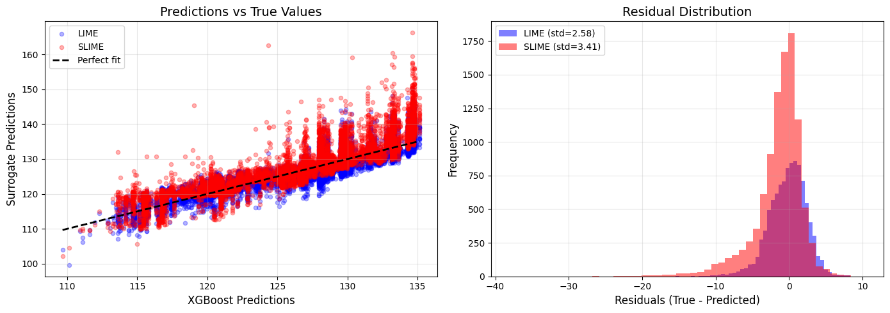

SupraLocal Interpretable Model Agnostic Explanations (SLIME)
SLIME is a very similar model interpretability technique to LIME (Local Interpretable Model Agnostic Explanations). Essentially, LIME is a technique that approximates any black box machine learning model with a linear model around a certain point. The surrogate model is fitted with Gaussian perturbed samples around the point.
SLIME extends this idea. Here, we implement the framework as presented by the SLIME paper (Fong, Motani 2025).
SLIME Algorithm: Suppose we have a black-box model \(f(x)\),
We want to fit a local surrogate model \(g^{*}(x) \in \mathcal{G}\) where \(\mathcal{S}\) is the space of closed-form analytic expressions (symbolic models) to estimate the behaviour of \(f(x)\) around point \(x_0\).
To choose our surrogate model, we create a dataset points near \(x_0\). This dataset, \(\mathcal{D}\), consists of the \(J-\) nearest neighbours around \(x_0\) and \(N_{\text{synthetic}}\) number of Gaussian sampled points around \(x_0\) (the variance of the Gaussian is equal to the variance of the set of \(J\) neighbours, hence we choose the size of the neighbourhood by setting \(J\)).
We evaluate the outputs of the model on this dataset, \(\mathcal{D}\), to create the targets for our symbolic regression \(\mathcal{T}\).
We choose \(g^{*}(x)\) by $$
g^*(x) = \arg\min_{g \in \mathcal{S}} \sum_{z_i \in \text{synthetic}} \pi_x(z_i) [f(z_i)-g(z_i)]^2 + M \sum_{z_j \in \text{neighbours}} [f(z_j)-g(z_j)]^2
$\( where \)\pi_x(z_i) = \exp(\frac{-||x_0-x_i||^2}{\sigma^2})\( is the proximity kernel weighting and \)M$ is a weighting for the real neighbours.
SLIME has benefits over LIME as it does not restrict itself to linear models, yet does not have any reduction in interpretability of the surrogate model.
We present symtorch.SLIMEModel, which can fit a SLIME model for you. The user can specify:
\(J-\) nearest neighbours (
J_neighbours = 10)\(M\) (
real_weighting = 1.0)\(N_{ ext{synthetic}}\) (
num_synthetic = 0)
As well as
Nearest neighbour metric (
nn_metric = "euclidean")PySR parameters (
pysr_params=Nonedefaults to default parameters)
The model is fitted using the .fit() method and predictions can be made using .predict().
SLIME Demo
Let’s apply SLIME to the airfoil self-noise dataset.
import numpy as np
from pysr import *
from sklearn.datasets import fetch_openml
X, y = fetch_openml(
name="airfoil_self_noise", # OpenML dataset name
version=1,
as_frame=False,
return_X_y=True
)
print(X.shape, y.shape)
(1503, 5) (1503,)
In this dataset, these are the input and target variables:
input_vars = [
"Frequency", "Angle_of_attack", "Chord_length",
"Free_stream_velocity", "Suction_side_displacement_thickness"
]
output_vars =["Scaled_sound_pressure_level"]
Let’s train an XGBoost model on this dataset.
from sklearn.model_selection import train_test_split
from sklearn.ensemble import GradientBoostingRegressor
X_train, X_test,y_train, y_test = train_test_split(X, y)
xg_boost_model = GradientBoostingRegressor().fit(X_train, y_train)
Let’s see how well the model performs.
from sklearn.metrics import r2_score, mean_squared_error
xg_boost_y_pred = xg_boost_model.predict(X_test)
print("Accuracy: ", r2_score(y_test, xg_boost_y_pred))
Accuracy: 0.8484194741522617
This gives us a pretty good R2 score, our model explains 85% of the variance in the dataset.
Wrap the model in a function, which is what symtorch.SLIMEModel.fit() expects.
def f (inputs):
return xg_boost_model.predict(inputs)
Fitting LIME
Before we get to using SLIME, let’s create a LIME model for comparison.
In this LIME model, we use 5000 perturbed samples around some random \(x_0\). The variance of the Gaussian used to get these samples is determined by our \(J\) nearest neighbours, just so we have a fair comparison between the SLIME and LIME models (as we fit and compare performance on the same neighbourhood).
from sklearn.linear_model import Ridge
from sklearn.preprocessing import StandardScaler
from sklearn.neighbors import NearestNeighbors
def simple_lime(
model,
X_train,
x0,
n_samples=5000,
J_neighbours=10,
kernel_width=None,
alpha=1.0,
random_state=0,
nn_metric='euclidean',
):
"""
LIME-style local surrogate for regression around a single point x0.
Uses the variance from J nearest neighbors to define the perturbation scale.
This matches the neighborhood used by SLIME for fair comparison.
"""
rng = np.random.default_rng(random_state)
X_train = np.asarray(X_train)
x0 = np.asarray(x0).reshape(1, -1)
n_features = X_train.shape[1]
# 1. Find J nearest neighbors and compute their variance
nbrs = NearestNeighbors(n_neighbors=J_neighbours, metric=nn_metric).fit(X_train)
_, indices = nbrs.kneighbors(x0)
nearest_neighbors = X_train[indices[0]]
# Use variance from nearest neighbors as perturbation scale
sigma = np.std(nearest_neighbors, axis=0, ddof=1)
sigma[sigma == 0] = 1e-6
print(f"Using variance from {J_neighbours} nearest neighbors")
print(f"Perturbation std: {sigma}")
# 2. Sample neighbourhood around x0
Z = x0 + rng.normal(0, sigma, size=(n_samples, n_features))
# 3. Black-box predictions
y_bb = model.predict(Z)
# 4. Standardize the inputs (for Ridge regression stability)
scaler = StandardScaler()
Z_scaled = scaler.fit_transform(Z)
x0_scaled = scaler.transform(x0)
# 5. Proximity weights - compute in SCALED space
dists = np.linalg.norm(Z_scaled - x0_scaled, axis=1)
if kernel_width is None:
kernel_width = np.sqrt(n_features) * 0.75 # Default LIME kernel width
weights = np.exp(-(dists**2) / (kernel_width**2))
# 6. Fit weighted linear surrogate
lin = Ridge(alpha=alpha, fit_intercept=True)
lin.fit(Z_scaled, y_bb, sample_weight=weights)
# 7. Fidelity on the sampled neighbourhood
y_lime = lin.predict(Z_scaled)
r2 = r2_score(y_bb, y_lime, sample_weight=weights) # Weighted R²
mse = mean_squared_error(y_bb, y_lime, sample_weight=weights) # Weighted MSE
return {
"surrogate": lin,
"scaler": scaler,
"r2": r2,
"mse": mse,
"coeffs": lin.coef_,
"intercept": lin.intercept_,
"x0": x0,
"Z": Z,
"weights": weights,
"y_bb": y_bb,
"y_lime": y_lime,
"nearest_neighbors": nearest_neighbors,
"sigma": sigma,
}
print("=" * 60)
print("FITTING LIME MODEL (Linear Approximation)")
print("=" * 60)
np.random.seed(290402)
i = np.random.randint(0,len(X_test))
x0 = X_test[i]
res_lime = simple_lime(
model=xg_boost_model,
X_train=X_test,
x0=x0,
n_samples=10000,
J_neighbours=10,
random_state=290402,
)
print(f"\nLIME Local R² (weighted): {res_lime['r2']:.4f}")
print(f"LIME Local MSE (weighted): {res_lime['mse']:.4f}")
print(f"\nXGBoost prediction at x0: {xg_boost_model.predict(x0.reshape(1, -1))[0]:.4f}")
print(f"LIME prediction at x0: {res_lime['surrogate'].predict(res_lime['scaler'].transform(x0.reshape(1, -1)))[0]:.4f}")
============================================================
FITTING LIME MODEL (Linear Approximation)
============================================================
Using variance from 10 nearest neighbors
Perturbation std: [1.00000000e-06 5.99662868e+00 8.96027777e-02 8.32733117e+00
1.09085610e-02]
LIME Local R² (weighted): 0.8208
LIME Local MSE (weighted): 4.5403
XGBoost prediction at x0: 125.4337
LIME prediction at x0: 126.3820
Fitting SLIME
Let’s fit a SLIME model using the same J=10 nearest neighbors approach. SLIME will discover a symbolic equation that approximates the XGBoost model’s behavior in this local region.
from symtorch import SLIMEModel, regressor_to_function
print("=" * 60)
print("FITTING SLIME MODEL (Symbolic Regression)")
print("=" * 60)
# Create SLIME model with J=10 nearest neighbors
# Use num_synthetic to add synthetic samples around x0
slime_model = SLIMEModel(
J_neighbours=10,
num_synthetic=4990, # 5000 - 10 synthetic samples
nn_metric='euclidean',
pysr_params={
'niterations': 500,
'binary_operators': ['+', '*', '-', '/'],
'unary_operators': ['sin', 'cos', 'exp', 'log', 'sqrt'],
'complexity_of_operators': {'sin': 3, 'cos': 3, 'exp': 3, 'log': 3, 'sqrt': 2},
'verbosity': 0
}
)
# Fit the model
slime_model.fit(f=f, inputs=X_test, x=x0)
print("\n" + "=" * 60)
print("SLIME RESULTS")
print("=" * 60)
print("\nTop 5 equations found by SLIME:")
print(slime_model.equations_[['complexity', 'loss', 'score', 'equation']].head(10))
============================================================
FITTING SLIME MODEL (Symbolic Regression)
============================================================
Fitting SLIME with 5000 points (10 real + 4990 synthetic)
/Users/liz/PhD/SymTorch_project/symtorch_venv/lib/python3.11/site-packages/pysr/sr.py:2811: UserWarning: Note: it looks like you are running in Jupyter. The progress bar will be turned off.
warnings.warn(
============================================================
SLIME RESULTS
============================================================
Top 5 equations found by SLIME:
complexity loss score \
0 1 19.923613 0.000000
1 3 19.719720 0.005143
2 5 7.284615 0.497927
3 7 5.556838 0.135368
4 9 3.543346 0.224979
5 11 3.534709 0.001220
6 12 3.521867 0.003640
7 13 3.414330 0.031010
8 14 3.145898 0.081882
9 15 3.119755 0.008345
equation
0 126.5054
1 126.65671 - x2
2 128.73413 - (x4 * 562.5998)
3 128.7587 - ((x2 * 3756.935) * x4)
4 ((x2 * -36.319958) + 134.22513) - (x4 * 562.0367)
5 (134.2239 - (x2 * 36.2656)) - (x4 * (569.10767...
6 134.19476 - ((x2 - sin(x4 * -15.791803)) * 36....
7 ((0.13227321 - (x2 * 0.03171085)) - (x4 * (x2 ...
8 -302.18643 - (((x2 + x4) * 551.255) - (exp(x2)...
9 107.16681 - ((x2 - sin(exp(x4 * -36.104214))) ...
# Get the best SLIME equation
best_equation = slime_model.get_equation()
print(f"Best SLIME equation: {best_equation}")
# Evaluate both models on the sampled neighborhood from LIME
Z = res_lime['Z'] # The sampled points around x0
y_true = res_lime['y_bb'] # XGBoost predictions on these points
weights = res_lime['weights'] # Gaussian kernel weights
# LIME predictions (linear model)
Z_scaled = res_lime['scaler'].transform(Z)
y_lime_pred = res_lime['surrogate'].predict(Z_scaled)
# SLIME predictions using the model's predict method
y_slime_pred = slime_model.predict(Z)
# Calculate R² and MSE for both models (weighted)
lime_r2 = r2_score(y_true, y_lime_pred, sample_weight=weights)
lime_mse = mean_squared_error(y_true, y_lime_pred, sample_weight=weights)
slime_r2 = r2_score(y_true, y_slime_pred, sample_weight=weights)
slime_mse = mean_squared_error(y_true, y_slime_pred, sample_weight=weights)
print("\n" + "=" * 60)
print("COMPARISON ON SAMPLED NEIGHBORHOOD (n={})".format(len(Z)))
print("=" * 60)
print(f"\nLIME (Linear Model - uses all {Z.shape[1]} features):")
print(f" R²: {lime_r2:.4f}")
print(f" MSE: {lime_mse:.4f}")
print(f"\nSLIME (Symbolic Equation):")
print(f" R²: {slime_r2:.4f}")
print(f" MSE: {slime_mse:.4f}")
if slime_r2 > lime_r2:
print(f"\n✓ SLIME is better by {((slime_r2 - lime_r2) / max(abs(lime_r2), 1e-10)) * 100:.1f}% in R²")
else:
print(f"\n✓ LIME is better by {((lime_r2 - slime_r2) / max(abs(slime_r2), 1e-10)) * 100:.1f}% in R²")
# Test predictions at x0
x0_scaled = res_lime['scaler'].transform(x0.reshape(1, -1))
lime_at_x0 = res_lime['surrogate'].predict(x0_scaled)[0]
slime_at_x0 = slime_model.predict(x0.reshape(1, -1))[0]
xgboost_at_x0 = xg_boost_model.predict(x0.reshape(1, -1))[0]
print(f"\n" + "=" * 60)
print("PREDICTIONS AT x0")
print("=" * 60)
print(f"XGBoost: {xgboost_at_x0:.4f}")
print(f"LIME: {lime_at_x0:.4f} (error: {abs(lime_at_x0 - xgboost_at_x0):.4f})")
print(f"SLIME: {slime_at_x0:.4f} (error: {abs(slime_at_x0 - xgboost_at_x0):.4f})")
Best SLIME equation: -262.2764 - (((x2 + x4) * 503.67322) - ((cos(x4 * 339.53705) + 400.78864) * exp(x2)))
============================================================
COMPARISON ON SAMPLED NEIGHBORHOOD (n=10000)
============================================================
LIME (Linear Model - uses all 5 features):
R²: 0.8208
MSE: 4.5403
SLIME (Symbolic Equation):
R²: 0.8127
MSE: 4.7472
✓ LIME is better by 1.0% in R²
============================================================
PREDICTIONS AT x0
============================================================
XGBoost: 125.4337
LIME: 126.3820 (error: 0.9483)
SLIME: 125.9531 (error: 0.5194)
import matplotlib.pyplot as plt
# Create visualization comparing LIME and SLIME predictions
fig, axes = plt.subplots(1, 2, figsize=(14, 5))
# Plot 1: Predictions vs True values
ax1 = axes[0]
ax1.scatter(y_true, y_lime_pred, alpha=0.3, s=20, label='LIME', c='blue')
ax1.scatter(y_true, y_slime_pred, alpha=0.3, s=20, label='SLIME', c='red')
ax1.plot([y_true.min(), y_true.max()], [y_true.min(), y_true.max()], 'k--', lw=2, label='Perfect fit')
ax1.set_xlabel('XGBoost Predictions', fontsize=12)
ax1.set_ylabel('Surrogate Predictions', fontsize=12)
ax1.set_title('Predictions vs True Values', fontsize=14)
ax1.legend()
ax1.grid(True, alpha=0.3)
# Plot 2: Residuals
ax2 = axes[1]
lime_residuals = y_true - y_lime_pred
slime_residuals = y_true - y_slime_pred
ax2.hist(lime_residuals, bins=50, alpha=0.5, label=f'LIME (std={np.std(lime_residuals):.2f})', color='blue')
ax2.hist(slime_residuals, bins=50, alpha=0.5, label=f'SLIME (std={np.std(slime_residuals):.2f})', color='red')
ax2.set_xlabel('Residuals (True - Predicted)', fontsize=12)
ax2.set_ylabel('Frequency', fontsize=12)
ax2.set_title('Residual Distribution', fontsize=14)
ax2.legend()
ax2.grid(True, alpha=0.3)
plt.tight_layout()
plt.show()
print(f"\nResidual Statistics:")
print(f"LIME: Mean = {np.mean(lime_residuals):.4f}, Std = {np.std(lime_residuals):.4f}")
print(f"SLIME: Mean = {np.mean(slime_residuals):.4f}, Std = {np.std(slime_residuals):.4f}")

Residual Statistics:
LIME: Mean = -0.1867, Std = 2.5802
SLIME: Mean = -1.4134, Std = 3.4073